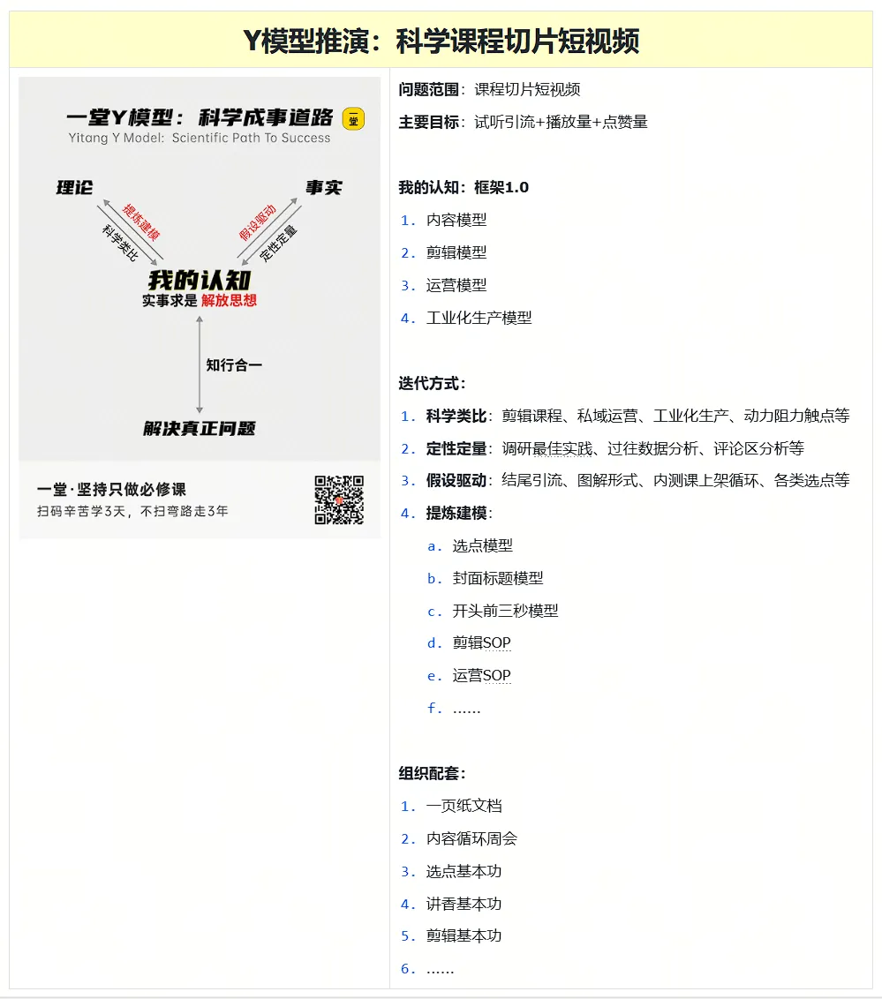

声音特征 × 拍打方式 × 稳定性
挑瓜的三个维度是：声音特征（判断依据）、拍打方式（训练动作）、练习稳定性（重复频率）。换成链上开发，这三个维度同样成立——只是"听"的变成了"跑"。
三列矩阵 · 从"听声辨瓜"到"链上开发"
三列是脚手架，不是标准答案。每一格都要有"是什么 / 怎么练 / 怎么判定"。
| 维度 | 在链上开发中是什么 | 如何练（拍打方式） | 判定标准 | 本周自评 |
|---|---|---|---|---|
| 声音特征 | 并发调度、交易生命周期、确认数与幂等语义 | 手写不查资料的推导练习 | 能画出完整时序图并讲清每一跳 | |
| 拍打位置 | 力度 = 重试与背压策略；位置 = 链的层级与合约地址 | 故障注入：RPC 超时、节点不同步、Gas 暴涨 | 系统不重复入账、不丢单、可告警 | |
| 练习稳定性 | 每天固定 2h、每周 6h 的节奏 | 不靠热情，靠固定时段与 git 记录 | 连续 12 周无断档 |
三句话总结 · 升级为可操作自检
🎯 框架的作用
框架让你在遇到陌生问题时知道该去看哪一列，而不是重新从零思考。
⚠️ 框架的边界
框架是脚手架，不是标准答案。能解释为什么这样设计，才算真正掌握。
🔬 框架的检验
每周至少一次脱离文档独立推导，记录推导与文档的差距在哪。
📋 自检 3 题 · "脚手架 vs 标准答案"边界（点击折叠）
-
陌生问题来了，你能立刻指认"该看哪一列"吗？
随机想一个本周遇到的问题（如"RPC 节点突然切到 fallback 怎么办"），默念 30 秒，看自己想到的是 "声音特征 / 拍打位置 / 练习稳定性"中的哪一列。想到具体列 = 框架内化；想到"先查文档" = 框架未建立。
-
能说出"为什么这一列这样设计"吗？
为三列矩阵的每个维度各写一句"设计理由"。如"声音特征看的是隐性知识外化程度" / "拍打位置看的是故障注入下系统韧性" / "练习稳定性看的是熟练度的时间维度"。能说清 = 掌握；说"是五步法 STEP 3 教的" = 死记。
-
脱离文档独立推导过吗？
本周找 1 小时，关掉所有笔记 / chat / 文档，凭记忆推导你正在学的核心概念。推导后打开文档对比——把"我推导的"与"文档说的"差距写下来。差距 ≠ 错误，差距 = 框架还没完全长在你脑子里。
🧪 独立推导现场流程 · 每周 1 小时
- 1关掉一切外部输入（chat / 文档 / 笔记 / Stack Overflow）。准备纸笔或 Markdown。
- 2选一个本周核心概念（如"幂等键的实现细节"），把它写在纸上：定义 / 触发条件 / 失效场景 / 解决方案。
- 3写 30 分钟——卡住的地方打问号，不要查。
- 4打开文档对照 15 分钟——记录"我推导的"vs"文档说的"具体差距（不是"差不多"，是具体句子）。
- 55 分钟写一段"差距总结"——为什么有差距？是文档没说清 / 我没记住 / 我理解错了？下一步怎么办？
反模式对照 · 这些做法 = 不在三列里
看到下面这些"常见做法"——别以为是框架，那是**跳过框架的捷径**。
| 常见反模式 | 看起来对吗？ | 为什么不属于三列 | 该看哪一列 |
|---|---|---|---|
| 直接背熟 go-ethereum 文档 API | ⚠️ 危险 | 这是"标准答案"记忆，不是"听到声音能分类"的内化 | 声音特征 · 推导"听到这个 API 名词 → 想到什么场景" |
| 写代码 + 跑通 + 就 commit | ⚠️ 危险 | 没注入故障的代码 = 没被"拍打过" = 不知道韧性边界 | 拍打位置 · 至少做 1 次故障注入再 commit |
| "感觉会了"就跳过推导 | ❌ 错 | "感觉会了"是 12 周后最大的反模式 —— 它制造不了任何差距 | 练习稳定性 · 把"感觉会了"换成"我推导到哪一步卡住" |
| 周末不写代码只在补理论 | ⚠️ 危险 | 练习稳定性要求"每周固定时段"，周末断了 = 节奏失稳 | 练习稳定性 · 周末也至少 1 次 30 分钟 |
| 看到框架只收藏不写下"为什么" | ❌ 错 | 收藏 = 文档丢进收藏夹没打开过 = 框架没被加工过 | 声音特征 · 写下"为什么这一列这样设计" |
| 试图"完整覆盖"所有链 | ⚠️ 危险 | 范围失焦 = STEP 01 失败，三列无意义 | 回到 STEP 01 缩范围 |
📅 12 周切片练习节奏 · 3 阶段 12 周
3 阶段节奏对应 5 步的不同侧重。前 4 周 STEP 01-03 各做一次，W5-8 STEP 04 主导，W9-12 STEP 05 主导。
📋 6 段详细 · 每段含动作 + 产出物 + 切片维度
每段两行 = 段名 + 时长。下方 4 列块 = 动作 / 产出物 / 切片维度。对比 SVG 飞轮看：每段对应哪 STEP。
🗺 12 周节奏 ↔ 5 步法 对照表（点击折叠）
| 阶段 | 周次 | 动作（每段两动作） | 对应 STEP | 本阶段交付物 |
|---|---|---|---|---|
| 🔍 基础 | W1-2 | 听 · 记 | STEP 01 · 问题范围 | 范围声明 + progress.md 笔记 ≥ 30 条 |
| 🔍 基础 | W3-4 | 写 · 对 | STEP 02-03 · 明确目标 + 搭框架 | 4 个量化指标 + 3×3 矩阵 |
| 🔨 深耕 | W5-6 | 拍 · 排 | STEP 04 · 预判进步（前置） | 故障注入剧本 ≥ 3 个 + 修复 commit |
| 🔨 深耕 | W7-8 | 验 · 读 | STEP 04 · 预判进步（深化） | 覆盖率 ≥ 70% + 第 4 周月回顾 |
| 📦 收口 | W9-10 | 教 · 换 | STEP 05 · 组织配套（前置） | 系列文章 ≥ 5 篇 + 第 8 周季复盘 |
| 📦 收口 | W11-12 | 投 · 面 | STEP 05 · 组织配套（落地） | 30+ 投递 + 可投递化产物 |
💡 为什么 STEP 01-03 集中在前 4 周？这 3 步是"一次性的"——写完一次就有。
为什么 STEP 04 在 W5-8 主导？预判进步 = 每周复盘，是 持续 8 周 的动作。
为什么 STEP 05 在 W9-12 主导？组织配套 = 把前 8 周沉淀的方法论变成"能交付的产品"。
看 go-ethereum 文档 · 看 Foundry 源码 · 看 commit 历史。
只看不写，把听到的"声音"记下来。
每个 API 名词 → 标"对应什么场景"。
记法：commit message 或 progress.md。
progress.md（场景分类笔记 ≥ 30 条）
关文档独立推导本周核心概念。
卡住打问号，不要查。
30 分钟推导 + 15 分钟对照。
差距写进 commit message。
progress.md ≥ 100 条 · 推导 vs 文档 差距笔记 ≥ 10 条
写代码 + 故障注入。
RPC 超时 / 节点不同步 / Gas 暴涨各 1 次。
按注入结果调整限流 / 背压 / 重试。
每条修复带 commit message 写"为什么"。
系统不重复入账 / 不丢单 / 可告警。
每个边界条件都有对应测试。
读 Geth / Foundry 源码级注释。
读源码能解释"为什么这样设计"。
写一篇"我是怎么用三列推导 X 的"。
让框架从你脑子里长出来。
用三列矩阵做陌生问题。
陌生 → 指认该看哪一列 → 推导。
简历 + demo 视频 + 投递。
30+ 投递用第 8 周季复盘结论。
面试时能说出"我用三列推导过 X / Y / Z"。
把框架变成竞争力。
✅ 12 周进度跟踪（点击勾选已完成周）
点下面 12 个周次徽章 → 自动记录到 localStorage。满 12 勾 = 你完成了完整 12 周飞轮。
📦 5 维度切片卡 · 把"会写 Go 服务"切成可独立打分的小块
三列矩阵是"听 / 拍 / 稳"，但对具体能力维度还要切。下列 5 个维度每周各打一次钩——能勾的越多，证明范围越深。
💡 这 5 个维度来自原"科学课程切片短视频"原图解读。点击卡片可勾选/取消勾选（localStorage 保存）。
